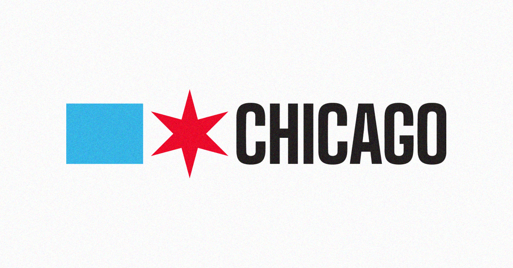

Role
Usability Evaluation
Chicago.gov
A moderated usability study evaluating how well Chicago.gov supports residents in completing common city-service tasks. The study focused on navigation clarity, task completion, search behavior, confidence, and the effort required to reach the right endpoint.

Project Type
Government website usability study
Methods
Heuristic review, walkthrough, pilot test, usability testing
Timeline
Apr 2026 - Jun 2026
Overview
Chicago.gov worked, but users often needed extra effort to use it confidently.
Chicago.gov is the official portal for city services, payments, permits, public programs, applications, and department information. Because the site supports many departments and task types, users often had to interpret broad labels, scan dense pages, and recover from wrong turns.
The evaluation tested whether users could complete realistic resident tasks without confusion, backtracking, overusing search, or feeling uncertain about whether they had reached the correct page.
Research Setup
The final test built on earlier evaluation work before formal usability testing.
Heuristic Issues
Initial usability review
The team identified issues around visibility of system status, consistency, recognition over recall, and dense visual layouts.
Pilot Session
Refined the study
The pilot helped reduce the task set from five to three, simplify task wording, improve timing, and clarify team roles.
Participants
Formal usability sessions
Five adult participants completed moderated remote sessions using Zoom, screen sharing, and think-aloud protocol.
Research Questions
The study focused on task success, confusion points, efficiency, and confidence.
Can users find the right starting point?
We evaluated whether homepage navigation and labels matched common resident goals.
Where do users hesitate or make wrong turns?
We tracked confusion, backtracking, misclicks, unclear labels, and search dependence.
Do users feel confident at the endpoint?
We looked beyond completion and noted whether users trusted that they had reached the right page.
Tasks Tested
Participants completed three realistic city-service scenarios.
Task 01
Request tree debris removal
Users needed to request debris removal after removing dead hedges or tree debris from their property.
Expected path: Request service → Tree Debris Removal → 311 service requestTask 02
Find residential parking permit information
Users needed to find how to apply for the appropriate residential parking permit or parking zone process.
Expected path: parking / permits → residential permit or petition processTask 03
Find early education resources
Users needed to find preschool or early education programs for a young child in Chicago.
Expected path: Programs & Initiatives → Education → Chicago Early LearningTask Performance
Residential parking was the slowest and least confident task.
Tree Debris Removal
3 successful, 1 partial, 1 unsuccessful
Residential Parking Permit
2 successful, 2 partial, 1 unsuccessful
Early Education Resources
3 successful, 1 partial, 1 unsuccessful
Task Results
Each task revealed a different kind of usability breakdown.
Tree Debris Removal
Users understood the goal but not the category.
Tree debris was confused with garbage, yard waste, parks, trees, and environment. The request form also used an unfamiliar “Available to Selected” interaction.
“Tree removal was not garbage, it was under trees. So that kind of tripped me up a little bit.”
“This should just be a bunch of checkboxes.”
Residential Parking Permit
Similar labels created the hardest task.
Users struggled to distinguish “parking permit,” “permit parking,” ward-specific information, petitions, and Finance pages.
“The search results for permit parking were bad.”
“Am I getting it? Am I finding it? Like, am I buying one? I don’t know.”
Early Education
The best task still created endpoint uncertainty.
Education was easier to associate with the task goal, but users still wanted clearer confirmation when leaving Chicago.gov for ChicagoEarlyLearning.org.
“It was a four, but I’m unsure if I’m at the right place.”
“I like when I can see all of the things just listed on the page of where to go next.”
Key Findings
Completion did not always mean the experience was clear.
Navigation labels were too broad
Labels like “I Want To,” “Apply For,” “Find/Get,” and “Request” forced users to translate their goal into the city’s internal service structure.
Search was necessary but unreliable
Search helped some participants recover, but parking-related results were broad, similar, and hard to distinguish.
Users were not always confident
Some participants reached plausible pages but still questioned whether they had found the correct endpoint or official next step.
Dense pages slowed scanning
Important links and actions were often buried under long eligibility text, explanatory content, and weak visual hierarchy.
Post-Test Ratings
Ratings showed that finding information was weaker than completing tasks.
Recommendations
The strongest improvements focused on clearer paths, stronger hierarchy, and better recovery.
01
Improve navigation labels
Use clearer, task-specific labels that match how residents think about city services.
02
Improve search result clarity
Add descriptions that distinguish similar terms like “parking permit,” “permit parking,” and “residential parking petition.”
03
Strengthen page hierarchy
Move key actions higher on the page and make next steps easier to scan.
04
Add clearer calls to action
Use direct buttons such as “Start Application,” “Request Service,” or “Find Programs.”
05
Clarify external links
Tell users when they leave Chicago.gov and confirm that the destination site is official.
06
Simplify form controls
Replace unfamiliar selection patterns with checkboxes or recognizable inputs.
Outcome
The study turned unclear navigation pain points into specific design recommendations.
The evaluation showed that Chicago.gov contains the right information, but users often need to search, backtrack, reinterpret labels, or decide whether a page is official before completing a task confidently.
The recommended improvements target the main sources of friction: broad categories, similar labels, unclear search results, dense content, hidden calls to action, and confusing form controls.
01
Clearer service labels
02
Better search recovery
03
More visible next steps
04
Higher user confidence
Reflection
For civic websites, usability is not just completion. It is confidence.
This project showed that a user can technically reach a page while still feeling unsure whether they found the correct service, application, or official next step. That matters more on a government website because confusion can delay requests, misdirect users, or cause people to abandon important tasks.
My main contribution included observing sessions, capturing participant behavior and quotes, supporting synthesis, and helping translate findings into clear recommendations for labels, search, hierarchy, external links, and form controls.
If I continued this project, I would test revised navigation labels and redesigned service pages with a broader audience, including mobile users, older adults, first-time users, and residents with lower confidence using government websites.